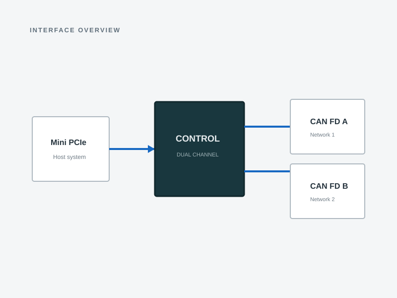

Engineering concept · final hardware may differ
Engineering concept · final hardware may differ System context
System context
Interface overviewREADY-TO-USE MODULE · DUAL CAN FD FAMILY
Mini PCIe Dual CAN FD Interface
In developmentA USB-based internal module designed to add two CAN / CAN FD channels to compatible Mini PCIe systems.
FORM FACTORFull-size Mini PCIe
HOST INTERFACEUSB 2.0 signals in the slot
NETWORKS2 independent CAN FD channels
STAGEEngineering development
Compatibility notice
This module uses the Mini PCIe connector but does not use PCIe data lanes. The host slot must provide compatible USB 2.0 signals.
OVERVIEW
Internal CAN FD without an external desktop adapter.
Designed for embedded computers and industrial PCs that need two CAN FD networks available from an internal slot.
Intended applications
- Industrial and embedded computers
- Robotics and automation development
- CAN network test systems
- Vehicle and equipment integration benches
CURRENT SPECIFICATION
Confirmed structure and open items
Unvalidated parameters are not presented as final specifications.
Product familyUSB ↔ Dual CAN FD
Product formatReady-to-use module
Host form factorFull-size Mini PCIe
Host busUSB 2.0 Full-Speed signals
CAN channels2 independent channels
Software supportUnder development
TerminationUnder design review
Electrical isolationUnder design review
Operating temperatureTo be specified after validation
AvailabilityNot yet for sale
VALIDATION
Required before launch
- USB enumeration and repeated installation
- Classic CAN and CAN FD communication against reference equipment
- Two-channel simultaneous traffic and USB throughput
- Protection, thermal, long-run, and compatibility testing
- Final photographs, drawings, and production revision
Looking for a controller instead?
See the programmed controller IC option for integration into a customer-designed PCB.